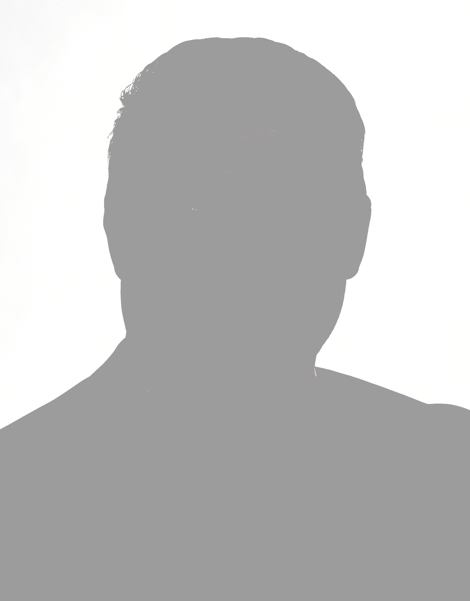

Pour une réelle communication avec les citoyens.
Nous avons débuté notre travail pour réparer Saint-Jérôme.
Marc Bourcier,
Maire de Saint-Jérôme
Maire de Saint-Jérôme
Ramenons la fierté de vivre à Saint-Jérôme
Pas de ligne de parti :
liberté de penser et de parler au nom de la population que
les conseillers représentent
Nous allons réparer les liens avec la population, les
organismes,
les villes voisines, les commerçants, le gouvernement
provincial.
Réparer les infrastructures, atténuer les problèmes de circulation, d’environnement et d’eau potable.
Nos élus
en apprendre plus

